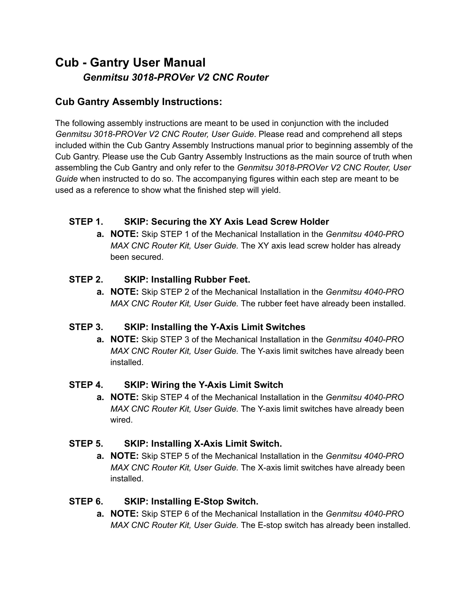
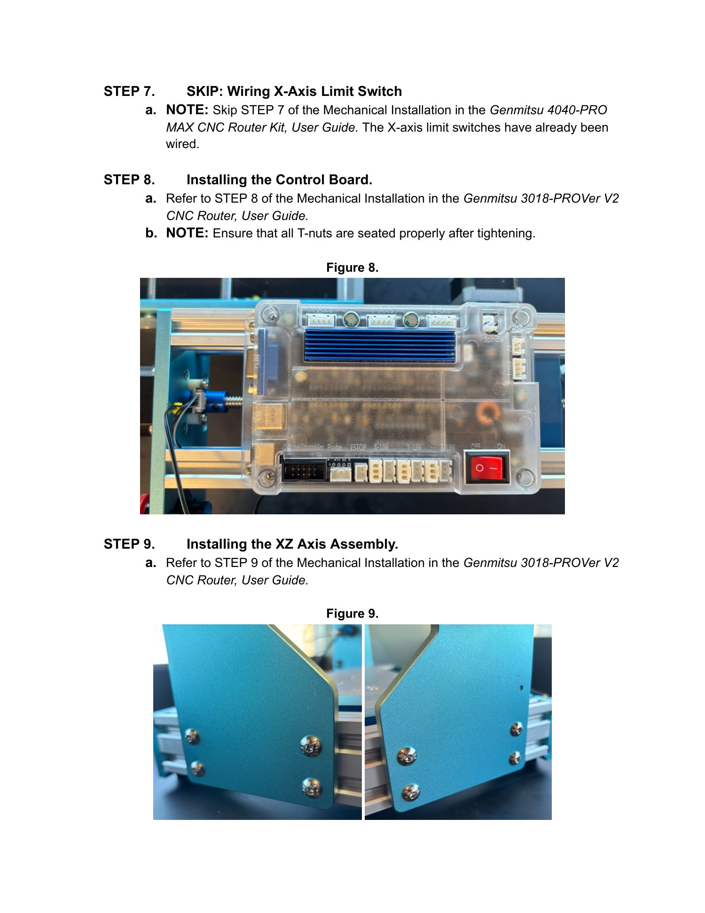
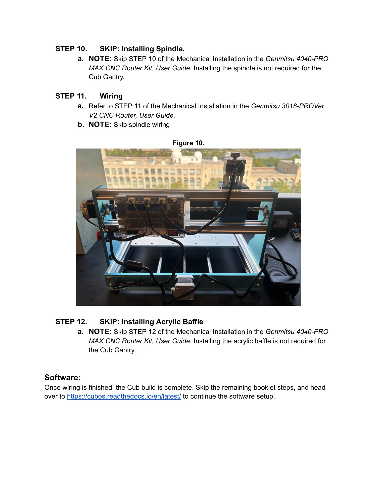

Gantry build guide · Cub · shipped variant
Cub Gantry — shipped
This variant arrives with the lead-screw holder, feet, limit switches, E-stop, and associated wiring already installed. Complete the remaining assembly on the Genmitsu 3018-PROVer V2 CNC Router.
Assembly steps
- Skip securing the XY Axis Lead Screw Holder. It is already secured.
- Skip installing the rubber feet. They are already installed.
- Skip installing the Y-axis limit switches. They are already installed.
- Skip wiring the Y-axis limit switches. They are already wired.
- Skip installing the X-axis limit switches. They are already installed.
- Skip installing the E-stop switch. It is already installed.
- Skip wiring the X-axis limit switches. They are already wired.
- Install the control board. Refer to Step 8 of Mechanical Installation in the Genmitsu 3018-PROVer V2 CNC Router User Guide. Ensure all T-nuts are seated properly after tightening.
- Install the XZ-axis assembly. Refer to Step 9.
- Skip spindle installation. Spindle installation is not required for the Cub gantry.
- Wire the gantry. Refer to Step 11 and skip spindle wiring.
- Skip acrylic-baffle installation. An acrylic baffle is not required for the Cub gantry.
Source note. The shipped source identifies the router as a 3018-PROVer V2, but its skip notes for Steps 1, 2, 3, 4, 5, 6, 7, 10, and 12 refer to a 4040-PRO MAX guide. Those references are reproduced as a source discrepancy; verify against the included 3018 guide.
Software
When wiring is finished, the Cub build is complete. Skip the remaining booklet steps and continue with CubOS software setup.
Related guides
After assembly, use the Cub calibration block guide to prepare calibration hardware.
Illustrated source manual
Read the original assembly figures and parts tables below. These pages were retrieved from KABLab on September 22, 2026. Open the source Google Doc for later changes.
View all 3 illustrated pages


